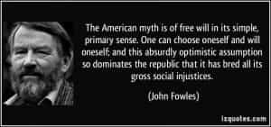

< < < Back
The Mystery Of Human Destiny – Return Of Kings
The mystery of destiny remains one which every man faces during his earthly existence. Life holds a spiritual meaning, apart from the sensual and material pleasures it provides man. The journey of our life keeps throwing challenges which raise questions as to what actually controls our lives. Sometimes life throws shit at us when we least expect it to happen.
We can’t control everything in our lives, even if our control itself might be great to begin with. Sometimes, we have to make the best in what circumstances we find ourselves in—even if we may not want to be in those to begin with.
What controls destiny: predestination or free will?
Man was destined to have free will. – Hal Lee Luyah
Philosophers and great thinkers have always tried to unravel the secrets of human destiny since antiquity. Whether freedom or predestination controls human destiny is one of the most frequently asked questions among humanity— more so because of man’s innate and great concern for freedom.
The questions which one asks when faced with the concept of predestination are:
- Are all our actions and fates really predestined?
- If every thing we do is predestined, then where does that put the concept of good and evil – when we don’t seem to have the power to change our intentions and actions? Should we held accountable for our deeds and morality, then?
The arguments for the existence of predestination often threaten the notion of human freedom in life, which itself seems distasteful for the rational mind. But at the same time, disregarding the presence of predestination in human destiny altogether also seems a flawed approach, if we take human history in regard. Free will thus seems to provide the way out.
Reading through the scriptures of most religions, one would indeed find a lot of prophecies, sometimes about the appearance of important men and events during various time periods. Now these prophecies would’ve been fulfilled (or may be fulfilled in the future)—but the fact remains as many of these prophecies have been fulfilled, life does seem reveal the phenomena of predestination.
It does baffle the mind when one thinks about how some of these prophecies came true – sometimes across centuries. If mankind’s destiny was totally undecided and unknown – totally subject to free will—then how did these prophecies come true?
The war between what influences destiny is a debate which remains baffling to humanity as ever. Arguments like the argument from free will and the dilemma of determinism are just a few examples of the numerous theories expounded to highlight the superiority of free will over predestination, or vice versa. Nevertheless, the logical approach seems to be adopting a middle ground between both, for both beliefs hold caveats.
A simple example to show how belief in either philosophy pushed too far can muddle a man’s mindset
Both theories will hold caveats, especially when pushed too far, for they can easily lead men into a blue pill world of illusionary thinking which holds nothing but disappointment in the end. There could be numerous examples to illustrate how both can affect men’s lives.
Belief: “Women can’t be changed, and can’t go against their nature. Thus it’s better to be with a woman (no matter how low-life she might be), than to be without a woman at all.”
I’ve heard a lot of men say this to justify their choice to sexually scavenge or choose sub standard women in their lives. This statement, reeking of defeatist fatalism, usually leads to the defeatist acceptance that women might not be able to control themselves at all, which might lead men to lower their expectations, standards and demands from women – because women are supposedly ‘predestined’ to fail men.
Indeed, women are not perfect—and they have lowered their value even more by sub-standard behavior in today’s feminist societies. But accepting that should not mean at the same time that men are disposable. Is a woman’s life, her needs and expectations, more valuable than a man’s? Definitely not.
But this defeatist “acceptance” —stemming from a convoluted self interpretation of predestination—affects a lot of men, not only when it comes to women, but also to other aspects of their lives, whether it may be in their careers, friendships, or other relationships. Acceptance should in no way mean lowering your expectations or the bar for others in your life. It’s important to be qualified in your life, but at the same time see that others also qualify themselves to be a part of your life.

At the same time, pushing the concept of free will too far can distort a man’s thinking to push him into a blue pill world, without even him realizing it. Every a supposedly “rational” theory like that of free will could become limiting when it is practiced without moderation. One such example is below:
Belief: “NAWALT – Every woman is different“
This is an example of free will driven thinking when pushed too far – even though it might not appear at first. This belief basically exonerates every woman by assuming she would totally function to logic and proper use of her free will, basically ignoring the true nature of women.
The refusal to understand women with the known frailties of female nature usually ends up in disappointment for men when women exercise their free will negatively, because sometimes we are socially programmed to believe that free will is more “rational” than predestination itself. Even if that might be logically true, can a leopard change its spots?
Either ways, the end result seems to be that both free will and predestination cannot single handedly provide answers for the questions of the human mind and the problems of human life.
Conclusion
As one penetrates deeper into the worlds of predestination and free will, one realizes that human destiny seems to be affected equally by both of them. Our deeds and thoughts are indeed indirectly influenced by them.
The solution remains to take the red pill to evaluate both theories critically, adopting an unbiased approach, But even if both might affect our destinies, it makes sense to maintain a mindset unaffected completely. Moderation in every aspect of life is praiseworthy; and the same applies to the intellectual mindset how we utilize to unravel the mysteries of life—for that is one of the hallmarks of self mastery.
Read Next: Are We Living In A Computer Simulation?


{kind=link}
{kind=link}
{kind=link}
{kind=link}
{kind=link}
{kind=link}